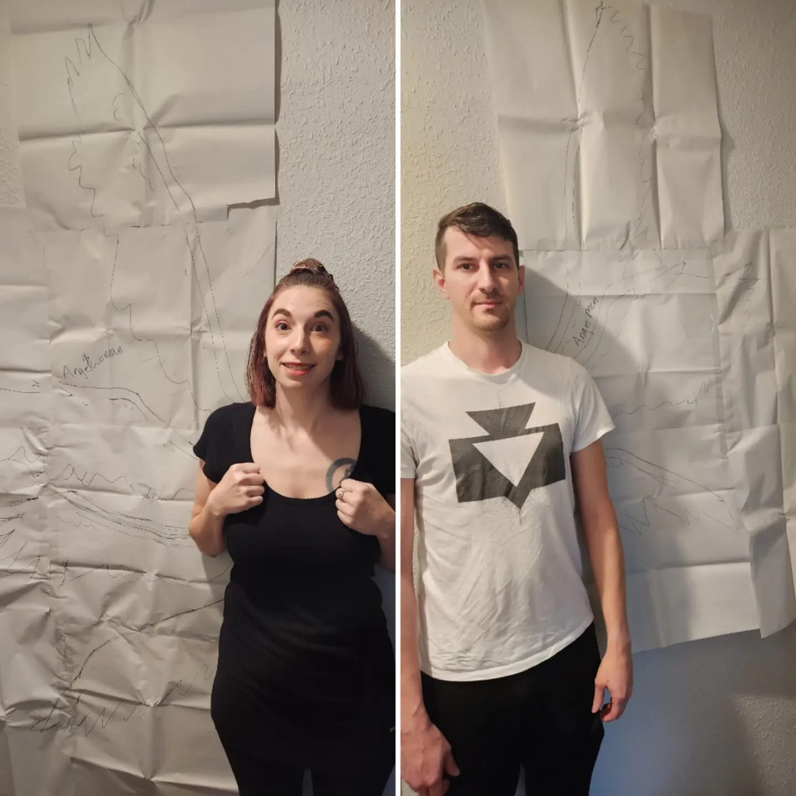

About Us
Who Are We
Vila and Sean met while volunteering for a local convention in their area. They were working as celebrity handlers when they met and enjoyed hanging out with each other and talking about games and cosplay. Eventually for fun, they cosplayed Officer Jenny and Nurse Joy from Pokemon. Shortly after, Jesse and James from Pokemon as well. Then they decided to tackle a dream cosplay for both of them. Making Angemon and Angewomon from Digimon. The cosplays took nearly a year where they worked on most weekends to try to complete their goal. As they did, they considered other duo characters and occassionally drag their friends into a cosplay group. Their goal is to hopefully turn Just Do The Thing Cosplay into more than just a duo and instead into a group of likeminded cosplayers who act as a safe place at any convention they are attending.
